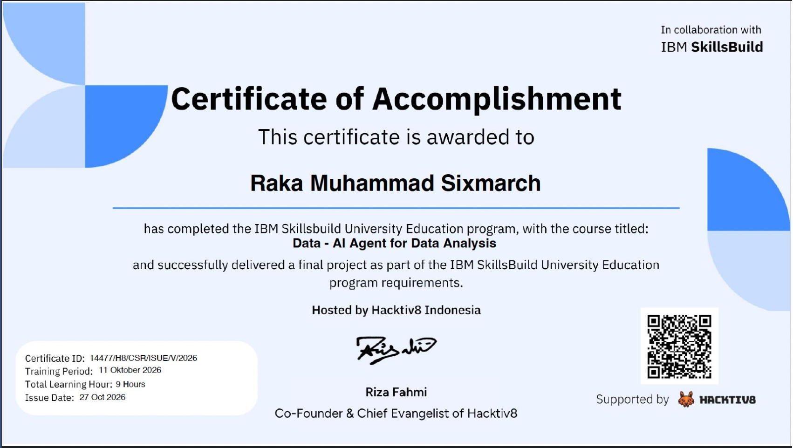
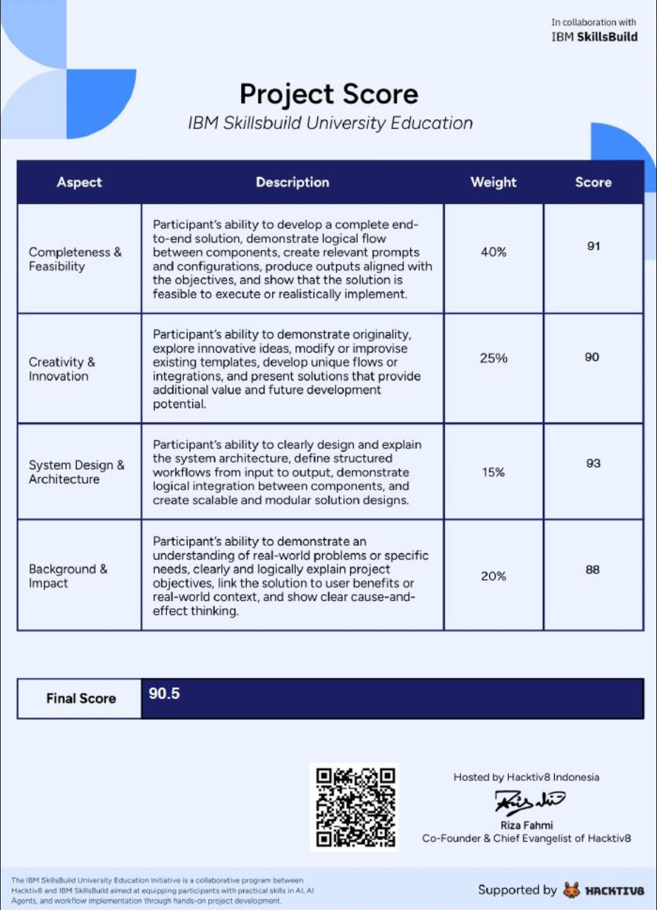

Hacktiv8 · IBM SkillsBuild
Data — AI Agent for Data Analysis
Completed the IBM SkillsBuild University Education program hosted by Hacktiv8 Indonesia, including nine learning hours and a final project with a score of 90.5.
Certificate details
